Thursday 2026/8/6#
- 10 hours today, 439.5 hours this track year.
1" bay benches, signals experiments, and more Toonerville.
8:30AM - 12:00PM (3.5 hours)#
Met Nelson at Home Depot to get the next batch of bench planks and start working on their installation. This work day was on short notice or else I would have removed the old benches beforehand so this morning would go faster. Encountered a few curveballs on this phase: two of the benches in the 1" area were not six feel like the rest, they were longer. One of these had brackets just a hair over six feet apart so a six foot board won’t work. The other one had brackets just a hair under six feet apart so theoretically a six foot board would work but unfortunately one of the brackets had a weak weld that broke when we worked on it.
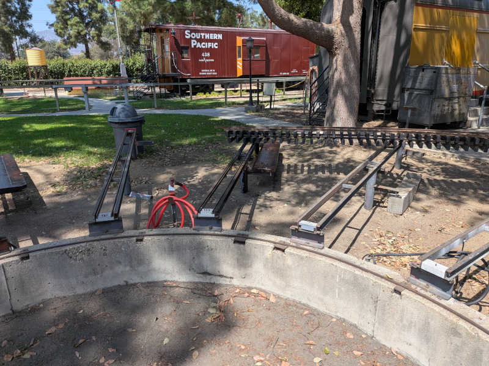
We started the day intending to install nine 6’ benches. We cut up five 12' boards so we expected one extra. With one too-wide set of brackets and one broken bracket, we’re now up to three extra 6’ boards. Rather than letting them sit around and liable to get lost, I got started on Richardson bays.
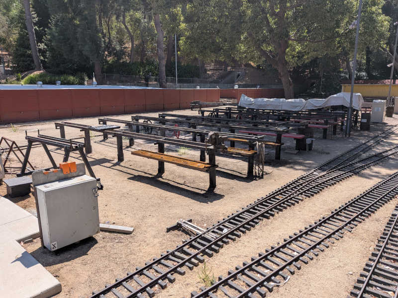
1:00PM - 7:30PM (6.5 hours)#
Nelson didn’t want to work on the Richardson benches so I continued solo after lunch to finish it up. Learning from today’s mistake, I took my tape measure to check out remaining benches. I confirmed 6’ length for Richardson bays and measured 8’ length for Alkire bays.
Remaining To-Do:
- 6 more 6’ benches to finish Richardson bays
- 16 total 8’ benches. 2 to finish 1" bay (after bracket is welded back) and 14 for Alkire bays.
After I put away all my bench work tools I switched gear to signals. There were a few low priority investigations that had been sitting on my list and this is a good day to knock them out.
When we installed dwarf signal GJ on 7/30 there was no clear lens cover. I was asked if I can rig up something with the commodity LED lenses currently on field trial at JFA/B so I did. These lenses were designed for a single LED in the center, so the trio of LEDs on the dwarf board didn’t work very well. It is still better than nothing but I’ll keep thinking about ways to do better.
I had been window-shopping stack lights designed to show status of industrial machinery with the hope for finding a commodity product that can be repurposed to vertical signal heads, but striking out so far because they were designed for omnidirectional visibility instead of focused into a beam.
However, I found a related type that had all three colors in a single dome, and that might work for the searchlight type signal heads. I bought one and brought it in for a size sanity check, which it passed.
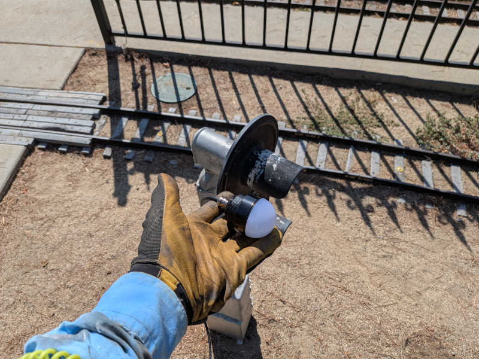
Future steps:
- Mechanical mounting. I haven’t worked on searchlight signals so I don’t know how it comes apart and how one of these lights might adapt.
- Electrical connection. These include LED current-limiting circuitry to take 12V DC directly so I’ll need to get my hands on the older style signal driver boards that lack LED current-limiter on board.
- Visibility. How well can these actually communicate the information it needs to communicate to locomotive engineers?
Switching gears again, I took dimensions of the V-style faceplate as used by signal head CD. There is no near term plan to upgrade these types of signal heads so it’s an opportunity for me to take the initiative.
Earlier while poking around the currently-dark Sutchville station signals, I found signs of an earlier experiement in commodity 12V DC LED modules. They were held into existing faceplates with RTV silicone (or similiar) and not very securely. Those modules looked like mass-produced commodities and once I knew they existed I found them to be light modules sold for vehicle side markers. Red and green for boats, yellow for trucks. They won’t fit in existing faceplates (hence the RTV) but that’s a problem 3D printing can solve. I’ll order a few for experimentation.
Last signals item (or at least marginally so) are the absolute signs around the layout. Some are in pretty bad shape. I took some measurements with the intent of trying a 3D-printed replacement and see if it holds up better.
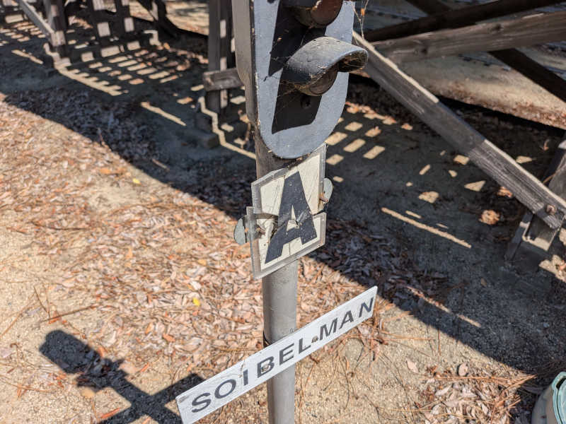
Signals activities above wrapped up in the peak of afternoon rush hour traffic. With no desire to sit in traffic I rolled out Toonerville Trolley for more study time.
For the light wiring organization project (where Dorado started) I bought some lever-lock type connectors that has mounting holes so we could screw them into the trolley instead of letting wires just dangle. Won’t fasten for real until Dorado has a chance to look it over and we know how much room we need to leave for the revamped roof.
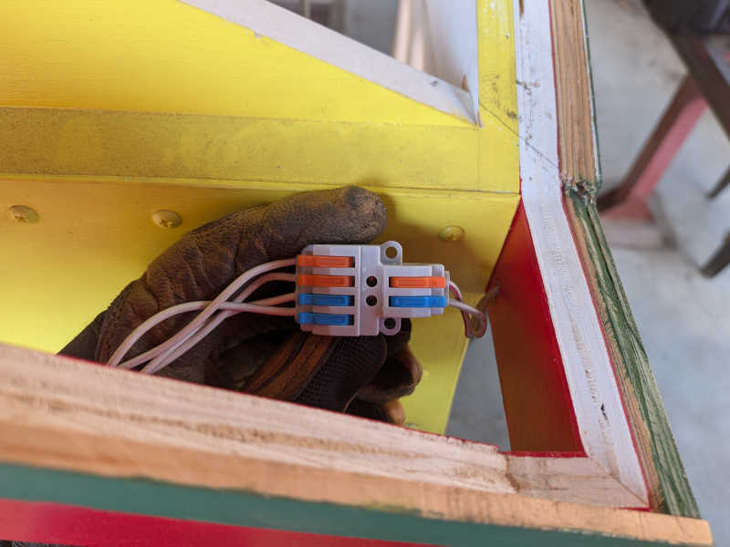
The Toonerville control box wiring has no strain relief, so it’s only a matter of time before something fails. In preparation for that eventuality I probed wires and voltages to see what it’s supposed to look like while running. When we last looked at this we found the wire colors don’t even match on either side of the connector. I looked for a frame of reference and was relieved to find the connector had official pin numbering stamped on the sides. I’ll use that!
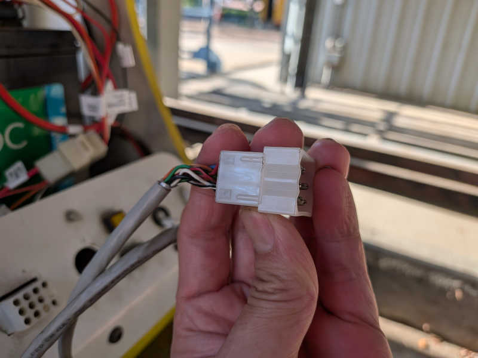
Monday 2026/8/3#
- 10 hours today, 429.5 hours this track year.
Miscellany Monday.
8:15AM - 2:15PM (6 hours)#
There was a miscommunication or a miscount but we had four extra planks of wood after doing steaming bays phase 1. Well, we’ve already paid for them and cut them down from the original 12 feet length so they can’t be returned, so might as well put them to work getting started on phase 2!
Removed four old benches from the 3.5" and 4.75" gauge steaming bay, where I learned somebody put in double the effort and fastened them with four bolts rather than two so twice the cutting. Then I did the usual routine of beveling corners as shin protection, sand and round off corners, drill mounting holes, apply wood treatment, then bolt them all down.
With that loose end tied up, I left the wood treatment to dry in the sun and switched to finish another project: removing loose surface rust from the pile of candidate rails for the siding project. I started this project on June 25th and got about 2/3 of the way through, enough for the siding project to get started. Now that the project is underway I finished off the rest of the pile so the siding crew has a full set to choose from.
Cleaning up messes from both projects took longer than I thought it would, lunch is very late.
3:00PM - 7:00PM (4 hours)#
After lunch I switched over to work that demanded less muscle exertion on account of the heat. First up: signal WB green’s flickering “bulb” was replaced. The socket is very loose so several replacement candidates couldn’t make good electrical contact. Eventually I found one whose legs could be bent out to make good contact but I’m sure that’s only going to last a few hot/cold cycles before it falls out too. Strawn wants to upgrade this signal head soon and I think that’s a great idea. In the meantime at least it’s not blinking.
Next project was the monthly check of fire extinguishers, verifying all yellow needles are within the green range. I can’t get into the caretaker’s caboose or the ticket booth, but everything else looks good. (Meeting car was checked during the evening’s board meeting.)
Finally I brought SF163 into the maintenance bay for a quick monthly checkup. Battery water was topped off. There are no worrisome battery fluid leaks. Two of the four axles show a tiny bit of shininess that may indicate oil seepage, something to keep an eye on. Nothing visibly out of place with axle and brake mechanical linkages. No electronics visibly darkened or burnt. This champ should be good to go for another month. And tonight the board voted to buy more spare gearmotor assemblies. The history of this locomotive reached far enough back people had different memories on how it came to be at the club, and with this vote it should keep running for a long time to come.
Sunday 2026/8/2#
- 8.5 hours today, 419.5 hours this track year.
Sunday operations crew.
8:00AM - 4:30PM (8.5 hours)#
Prepared CN2002 for Sunday ops in the morning. Conducted for part of the day and sat in the engineer’s seat for part of the afternoon. Also helped a few new members become familiar with Sunday operations from conductor duty to mister shutdown and west gate lock.
Also helped Perez install the prototype gate strobe module. Let’s see how this works out.
Thursday 2026/7/30#
- 9.5 hours today, 411 hours this track year.
Signals half day, other half spent annoying squirrels.
8:00AM - 12:15PM (4.25 hours)#
Signals in the morning: installed dwarf signal GJ (we need a clear lens cover) then installed a regulated power supply in panel R.
1:15PM - 6:30PM (5.25 hours)#
After lunch I went to verify panel R power supply upgrade in the morning fixed the erratic behavior in RSM2. It got better… but not fixed. To be continued.
I hitched up two gondolas filled with dirt, which had been sitting in the pit for months, and gave the dirt some purpose in life filling squirrel holes out on the west end of the layout. In a few days we should see which of these holes are active and important enough for squirrels to open back up.
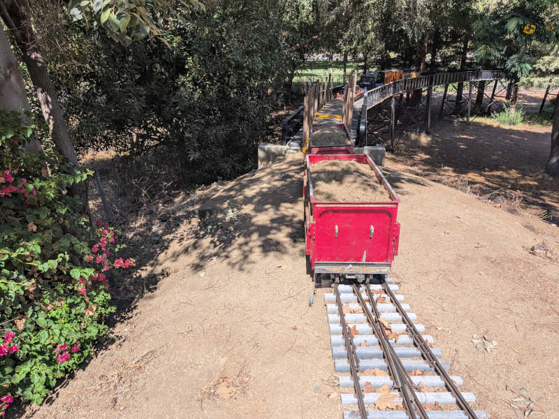
Tuesday 2026/7/28#
- 4 hours today, 401.5 hours this track year.
Signals half-day.
8:00AM - 12:00PM (4 hours)#
Started the morning expecting to learn how to fix WC but as it turned out the it was the signal head driver board that had failed.
Replaced green “bulb” in CD to bring that back to life.
New wire for signal SB. It has yellow for the first time in years!
After lunch, I got to learn the basics of steam locomotive operation on the club-owned beam engine.
Monday 2026/7/27#
- 10.5 hours today, 397.5 hours this track year.
Working on club-owned locomotives.
8:15AM - 1:45PM (5.5 hours)#
Most of the day was spent understanding what has been done to the Toonerville Trolley, which used to belong to a club member but is now a club-owned asset. It’s been clear that various people has had a hand in its modifications, and not everything makes sense to Dorado and myself. For example, we couldn’t find an easily accessible way to service the electronics control board. It seems like the designed service rooftop had been nailed shut!
Had some distraction in the form of UP1989 under investigation for a hydraulic control issue. Dorado and I disagreed with the Titan tech support answer, but maybe we don’t know what we are talking about.
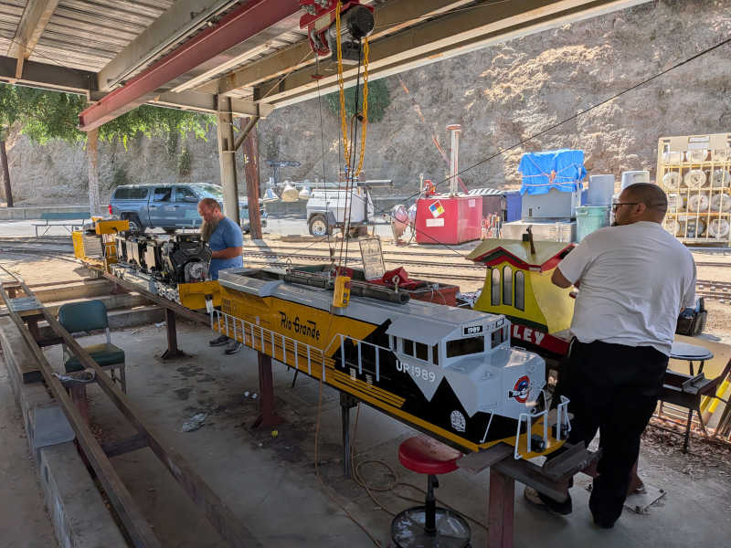
2:45PM - 7:45PM (5 hours)#
Continued Toonerville exploration after lunch. We got to a point where we got the roof off. It will have to be rebuilt in a way that allow easy removal for future servicing. Once the roof came off, we could probe the electrical system in ernest. By the end of the day we have a pretty good idea of the purpose of all the wires that come out of the control panel and several of the circuit boards within. However the rest of the circuit boards are Smith specials and opaque to us. Do we run the trolley as-is until something breaks? Or do we pull out the Smith boards now? Have to think about this one.
Sunday 2026/7/26#
- 8 hours today, 387 hours this track year.
Sunday operations crew.
8:30AM - 4:30PM (8 hours)#
Spent most of the day as engineer for Santa Fe 163 electric locomotive but mixed in some kitchen beverage cooler restocking and dish washing.
Saturday 2026/7/25#
- 4 hours today, 379 hours this track year.
Steaming bay bench wood treatment + minor signals work.
7:45AM - 11:00AM (3.25 hours)#
Joined Nelson in the morning applying wood treatment to steaming bay bench planks, then fastened them down securely. It’ll need some time to dry and the club is having our movie night. Got out the caution tape to advise people not to sit on freshly treated benches.
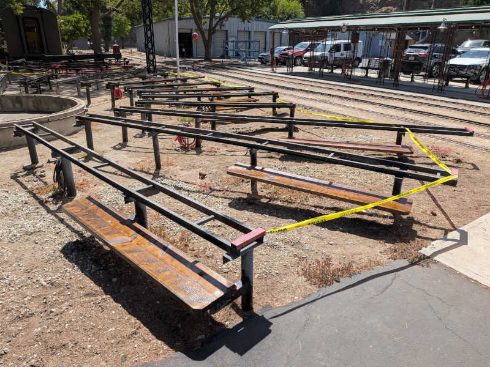
1:30PM - 2:15PM (0.75 hours)#
After lunch I thought I would get some signals work done but only replaced red bulb in Pennsy (GG) that was flickering. I also wanted to fix WC before movie night because that’s at Sutchville exit and people will be using that area, but it was a signal type new to me and I didn’t know what to do.
Besides, people started arriving for movie night and I went to help. Well, mostly socialize, so not counting hours once I stopped signals work.
Friday 2026/7/24#
- 9.5 hours today, 375 hours this track year.
Steaming bay benches, continued, then signals.
7:45AM - 12:00PM (4.25 hours)#
Started the day by dealing with a random piece of skylight(?) that someone dumped over the fence. Chopped it up so it fits in a dumpster.
After that I continued working on steaming bay benches, cutting corners off the raw boards, rounding off edges, and drilling holes to match each unique steaming bay. By lunchtime I have all the phase 1 bays prepared and it was too hot to continue in the direct sun.
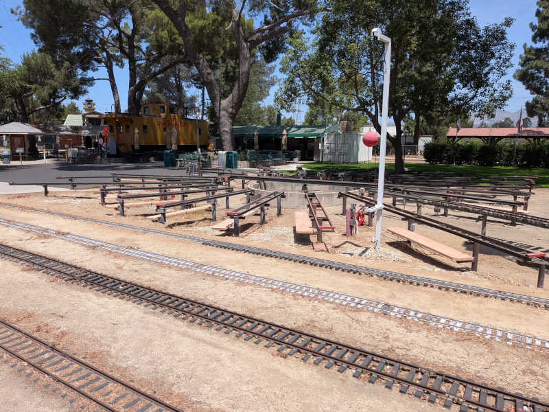
1:00PM - 6:15PM (5.25 hours)#
After lunch I went to investigate signals issues that are conveniently located in tree-shaded areas, specifically panel J which Strawn upgraded to ESP32 control. There were a few oddities that I traced down to signals trying to show yellow that aren’t there. I removed yellow-in wires from the old logic and they had since been installed as part of the upgrade. It pained me to disconnect the same wires again but we would rather have a green than a dark signal because yellow doesn’t work.
I also found a detection failure that traced down to a marginal bond issue, preventing the train axles from pulling rail voltage down to zero. The wire itself and the two crimped connectors at the end (with solder sealing) seemed fine, the problem was the interface between end connector and rail. This feeds my confirmation bias that I should continue sanding off loose rust and apply conductive grease to these mating surfaces.
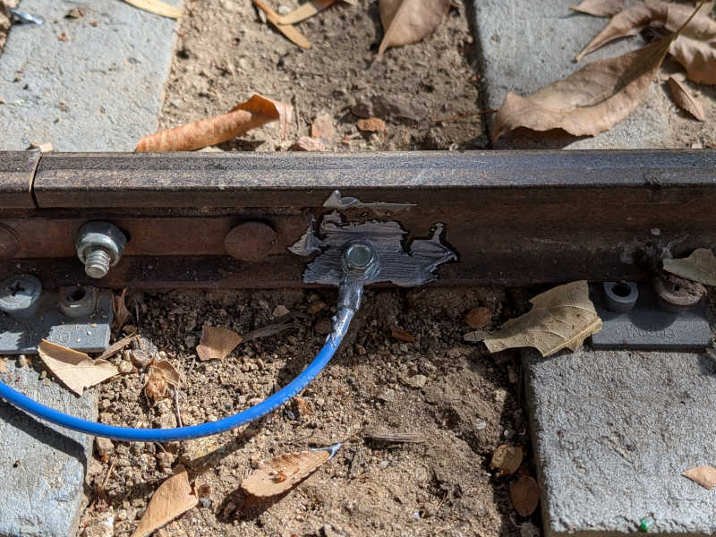
Thursday 2026/7/23#
- 5.5 hours today, 365.5 hours this track year.
Start installing first batch of steaming bay benches.
8:15AM - 1:45PM (5.5 hours)#
Met Nelson in the morning for a Home Depot run. They didn’t have the wood treatment Nelson wanted so we went to Lowes. But then found Lowes didn’t have enough lumber of the desired dimension and quality, so back to Home Depot again to finish the shopping list. This shouldn’t have taken two hours but it did.
Once we got all the planks back to the club we could start shaping them to fit, drill mounting holes (unique for every single bay), and apply wood treatment. We had ten bench planks drilled and fitted, with six of those treated, before it got too hot for Nelson and he declared an end to the day’s work. Looks like about another ten to go before this first steaming bay is done and we can see how people feel.
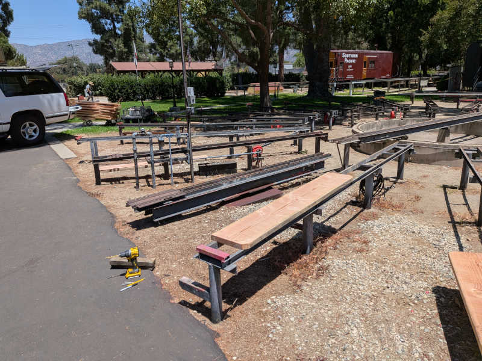
Sunday 2026/7/19#
- 9.5 hours today, 360 hours this track year.
Sunday public run day alongside Carolwood’s monthly activities.
7:00AM - 4:30PM (9.5 hours)#
Started the day pulling UP1989 out just for the sake of verifying that the yellow bench car set can hold pressure. Once verified, I handed UP1989 to Cook to run for the day. I then proceeded to start pulling CN2002 out to be turned around. Alexander joined me for that task and also connected up to the dark green bench car set to run for the day.
I conducted for CN2002 the whole day and aside from two passenger safety stops there was an embarassing derailment as the first train through Disney crossing but no harm done.
We started with four trains and a light crowd. By the end of the day we ended up with just two trains that couldn’t keep up with the rate of incoming guests. To ensure everyone got a ride, we kept running past the point Carolwood people packed up.
After the final load of public passengers disembarked, I took CN2002 for another familiarization run without passengers. Thanks to advice from Alexander on what to practice, I now feel comfortable enough with CN2002 to start running with passengers on board.
Thursday 2026/7/16#
- 4 hours today, 350.5 hours this track year.
Signals work half day due to heat wave.
8:15AM - 12:15PM (4 hours)#
Revisited the CAA+CCA green+red problem and it appears that back-feeding power when there’s both a force-red and detect is just what these relay-based signal driver boards do all the time. We checked two other boards and they both do the same thing. It is rare for multiple signal driver boards to be connected to the same XO board port, so that behavior doesn’t usually cause a problem but knowing that doesn’t help us.
Since replacing a board isn’t going to solve any problems today, the next thing to do is to put a diode in the CAA V+ port so it doesn’t back-feed into CCA. This will make CAA dimmer but it’s facing the opposite direction so that is less critical. Perhaps we’ll have to move the diode from CAA to CCA in six months when running direction flips.
After we verified the diode hack was sufficient for today, we headed towards panel R to look at erratic behavior of RSM2. But we barely left our panel C work area when we noticed BH didn’t turn red as the train entered BB5. Looking in panel B we saw not only dangling wires but dangling boards on top of dangling boards in front of the relevant wires we have to trace through. Decided there was a high risk of causing unintended changes if we move those dangling boards out of the way to dig any deeper. Other issues have priority today so we closed panel B back up. And it turns out we were right! Because BB5 now turns BH red. We did not intend to change anything yet we “fixed” it. Is this a win or is this a loss?
Deliberately not thinking too much about that, onward to panel R we go. The suspect was erratic pole switch behavior outside of the debounce time window on the switch motor board, so I started rigging up my oscilloscope to watch the transition. It was not a clean transition from +V to GND but that is expected of real buttons. The value settled within 5-6ms which is within range of buttons whose signal traverses over wires hundreds of feet in length.
The real problem turned out to be the panel voltage which dipped when RSM2 started turning. This was the same problem that took a lot of effort to diagnose in panel J and thus was a surprise because I was reassured that these motor control board have worked flawlessly in panel R. My diagnosis tree for both panel J and R were built on what I’ve been told and these foundational pieces of information were wrong.
At least now we know what’s going on and the upcoming rev. E motor control board will be designed to handle the situation.
Before we closed up panel R its ESP32 firmware was upgraded to the latest version and we moved onward to the adjacent panel S to do the same thing. While we had panel S open we get started on wiring up cross-panel communication to panel J. Panel S didn’t have a signal driver board so that was the first step we could do today before it got uncomfortably hot. The other end in panel J will have to wait another day.
Sunday 2026/7/12#
- 8 hours today, 346.5 hours this track year.
Sunday operations crew.
8:00AM - 4:00PM (8 hours)#
Started the morning with intent to check fire extinguisher gauges but got distracted by the black bench car set failing pressure leak test in one of its new air lines. Pulled out my tool boxes and jumped in. Eventually pin pointed the problem to the Schrader valve barb fitting for the rubber hose. So, thankfully not the new novel hardware. There’s a clamp that can be installed for a more secure fit but redoing the connection seemed to have done the job.
The yellow set didn’t get pulled out today so its pressure holding capability remains untested. I don’t want to do the blue set until yellow set tests OK.
Also had an unexpected detour through UP1989 control panel during this adventure as one of its internal air hoses fell out of its connector. Couldn’t imagine how fiddling with an air line at the back of the train could cause an air line within the front control console to pop out but that’s what happened.
As UP1989 was set up to depart from track 1, pruned the vines reaching out from the chain link fence so they won’t hit our guests in the face on the way out.
Took a signals status verification lap with Cammarata so he can see firsthand all the issues covered in the signals status email sent yesterday. This might become a regular thing. We turned on the water wheel on the way out but forgot to unlock the west gate. Bassett covered for us on that front.
Restocked kitchen beverage refrigerator.
Lunch break engineer for Santa Fe 163 electric locomotive.
Club bench car coupler consultation with Kristman, who seemed surprised to learn some of the springs are no longer springing. Can’t imagine this being a new thing but perhaps it’s not considered normal wear and tear? Kristman pointed me to a stockpile of couplers available for immediate repairs without having to order new units. He prefers spring units, but rubber absorption is preferable to solid units with no shock absorption capability. But even that is better than a freely sliding slot allowing bench cars to build up momentum before slamming into an end.
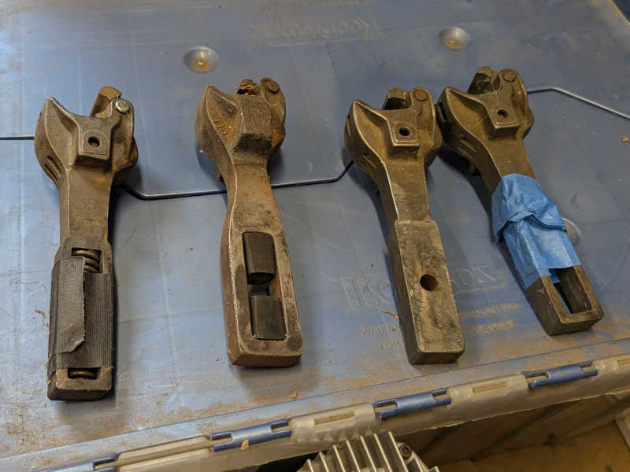
More reconnissance of existing network infrastructure as part of consultation on what the club might want to install to support future projects.
Sunday operations were shut down early today due to slight drizzle around 2:20 making the track slippery.
Shut down water wheel and locked west gate.
Kitchen dishwashing.
Saturday 2026/7/11#
- 11 hours today, 338.5 hours this track year.
A much more satisfying signals work day.
8:00AM - 12:15PM (4.25 hours)#
This is an official club work day and it was a fortunate coincidence that track work was underway in front of Sherwood station. Removing track triggers a train detection fault similar to a train detection and that is convenient for two projects on my to-do list. I had planned to park a train on this segment of track while I diagnose… and now I don’t have to!
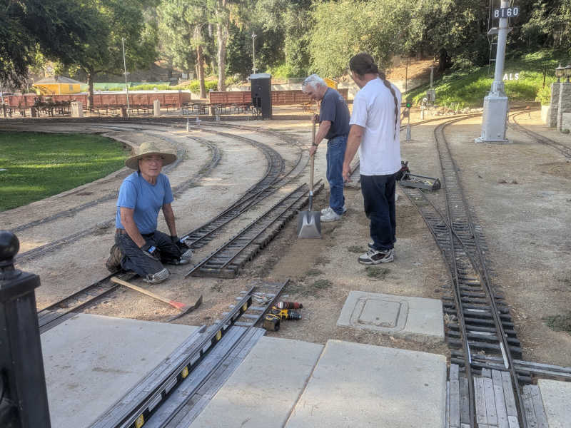
Taking advantage of this situation, I went to EJA yellow to try more ideas against its persistent intermittent illumination. It always lights up immediately after we touch it but goes dark again sometime afterwards. There were multiple short sessions spread throughout the day but I’m writing them together here. First I tried an emery board in the hopes I can scrape off surface corrosion. After EJA yellow went dark again, I sprayed some electric contact cleaner spray. When that didn’t last, I put some of my conductive grease on the contacts. Yellow went dark again so I replaced the incadescent automotive bulb LED retrofit module that isn’t technically a bulb. Once that was replaced, EJA yellow seemed to behave well again. I didn’t think a simple circuit like that LED module could hide an intermittent connection, but this data point says I was wrong.
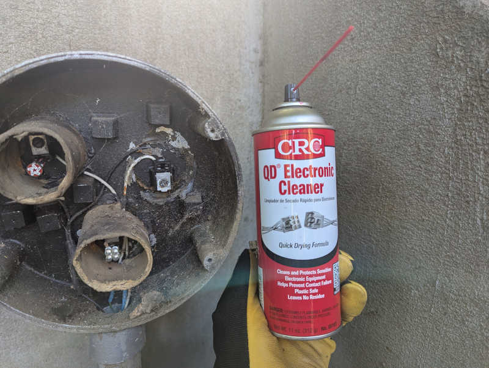
On the far side of the track work project I have CCA green+red when crossover is active and there’s a train in front of Sherwood. Or in today’s case, track work. Earlier sessions replaced the CCA signal driver board and traced it back to a XO board that seemed to be working. Today I backtracked further and found CAA signal board (on the other end of the crossover facing the opposite direction) was connected to the same XO board, and CAA was doing the same voltage backfeed that CCA was doing. I don’t have a replacement board handy so the short-term fix is to disconnect CAA’s power wire so it can’t backfeed. This means it’ll still light up in “Force Red” mode but would be dark outside of it. As CAA is facing oppsite of the current operating direction, this is the lesser of two evils until proper repair can be done.
1:00PM - 7:45PM (6.75 hours)#
During one of my trips checking how EJA yellow has held up, I noticed GF green is dark. This was intermittent during movie night a few weeks ago and seemed to be dark all the time now. Since I had the box of automotive style “bulbs” in hand for EJA yellow, I opened up GF to replace the green “bulb”.
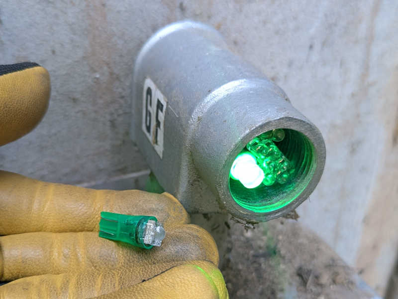
Returned to panel S+J for further testing of the seven wires between them. Good news: two of the seven may be usable. When I connect red (from 4-conductor bundle) and blue (individually run wire) in S and measure resistance in J, the round trip over those two wires measured just 4 ohms.
Three of the seven are heavily degraded. green from 4-conductor bundle, individually run pink, and individually run purple measure megaohms or higher.
Black and white in the 4-conductor bundle are flat out open circuits.
When I returned from valley back to the station, I saw the track work crew had wrapped up their mechanical work without reconnecting the electrical signal feed and bond wires that they had disconnected for the job. This was a surprise because we had talked about how wires were to be reconnected. I found Nelson and was told “Well, we knew you would do a better job than we could, so we figured we’d let you do it.”
Fine. I’ll do it, and I’ll do it my way. Both bond wires were replaced with fresh new bond wires, and six new fastening screws with conductive grease to mitigate corrosion.
Ended the work day with a round of club bench car air line upgrade to metal units that won’t be fatally damaged in event of bench car separation. The black and yellow bench sets were upgraded up to, but not including, the locomotive connection. Let’s see what happens tomorrow and upgrades will proceed incrementally if things work well.
Thursday 2026/7/9#
- 10 hours today, 327.5 hours this track year.
An unsatisfying signals work day.
7:45AM - 12:30PM (4.75 hours)#
Started the morning at panel C tracing through CCA GRed weirdness. The key is something not following the Smith “Force Red” concept, as there is voltage on the signal driver board power input pin when it should be turned off by a XO board. Is this malfunction inside the signal driver board, or is it a malfunction from outside the signal driver board?
The answer was apparently “Why not both?”
The power wire was disconnected from the board. I probed the signal driver board V+ and saw panel voltage. Aha! This board is broken and leaking “Force Red” voltage back out to its V+ pin. This board needs to be replaced.
Then I probed the disconnected power wire, expecting to find panel ground, and was disappointed to find panel voltage here as well. Crap. There’s more to this puzzle. At this point the sun started blazing hotly on panel C so we retreated to panel J which have shaded trees.
Today’s task for panel J was to map out all wires in preparation for ESP32 upgrade in the near future. Fortunately it already has the newer block detector and signal driver boards, so those wires can be left untouched. The motor driver situation is also moved up to the latest, with rev. D board now in charge of both motors and the old Smith board retired. This sorted out the pole button wires and they can stay untouched during the upgrade as well.
Rail switch position sensing microswitches accounted for two more wires, one per switch, and they were located and labeled. That took me to lunch time so I could tackle the biggest challenge with a full stomach.
2:00PM - 7:15PM (5.25 hours)#
After lunch it was time for the hard part: find and label all the wires that carried signals to and from adjacent panels and move them to the isolator and driver boards as appropriate. There were five wires to find: two red-out yellow-in signal pairs, and passing along train detection for a block that didn’t match signal/panel boundary. Technically we also needed two ground wires to send out as reference ground for adjacent panels R and S, but right now those two panels have ground planes tied to each other due to unrelated wiring issue so I could get away with just one ground wire. It also meant all panel R signal wires make a pit stop in panel S with a wire nut, which might be related but not important today.
That means I need six wires total, and I found seven wires already routed for the job and already attached to old circuit boards that make sense for their respective designated duties. I labeled them all so I don’t lose them, and moved outputs to driver board and inputs to isolator board. It all looked neat and elegant as I powered the panel up to verify my work.
It didn’t work. Nothing worked. No driver signals were received by S, and no isolater signals were received from S. I disconnected wires and put a low voltage across them to see if I’m looking at the right wires, and I was. But no signals went through.
After going in (semi)circles a few times I had the hypothesis these wires might have degraded. I picked five wires out of seven for the test, disconnected them from the circuit, and tied them all together in a single 5-pole lever-lock connector inside panel S.
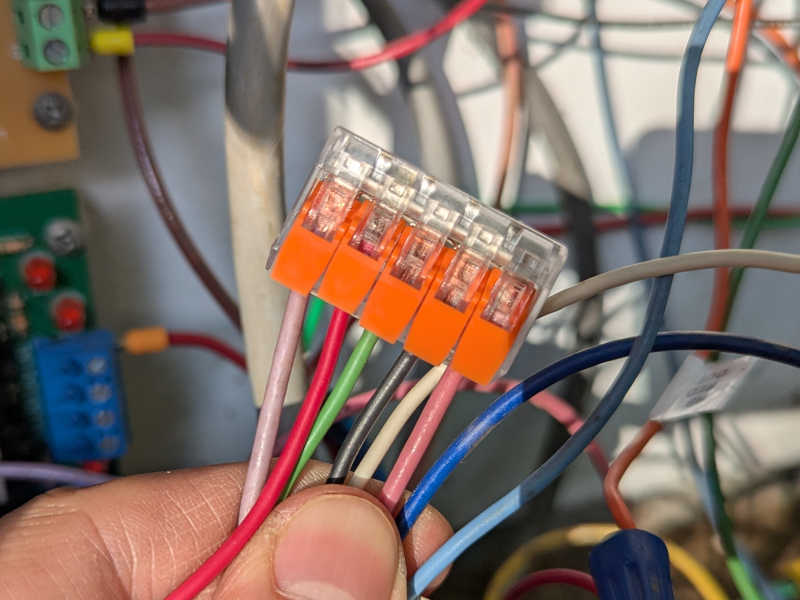
I then went over to panel J and measured continuity between each pair of wires. I’m supposed to get single digit ohms of resistance through these wires, but I got megaohm level resistance if I got anything at all. I was losing daylight so I didn’t have time to check the last two. But the trend doesn’t look good and even if the last two worked perfectly (which I doubt) they’re not enough to meet the needs.
All my work labeling and organizing these wires were a waste of time, these wires are toast. I wrote up this bad news of a status update to the team and..
“Oh yeah, I knew that.”
Well that would have been useful to tell me earlier! Or maybe label the known bad wires when they were found to be bad? Is that so much to ask?
Tuesday 2026/7/7#
- 9.5 hours today, 317.5 hours this track year.
A productive signals repair day
8:15AM - 12:15PM (4 hours)#
Started in panel K where KAA (signal indicating reversing track by covered bridge) sensor needed a minor adjustment. Then the rev. C I/O board I installed as part of the emergency repair on 6/9 was replaced with the intended rev. E board allowing the corresponding emergency repair ESP32 firmware source code changes to be reverted.
With rev. E in place, we can connected an input wire for detection state of IB15. This signal has to travel a long way through two separate lengths of wire, and it was labeled “Does not work”. Traced through and reconnected the wire to an IB15 signal so now it works, but that raised an interesting question: If the wire was not connected to anything, we could not have traced it back to IB15. If so, why was it labeled “IB15”? I can’t remember.
Finally a loose 2.5mm ID barrel jack power cable was replaced with a properly sized 2.1mm ID barrel jack cable.
Returning to panel I, we investigated II yellow not illuminating during this past Sunday public run. Flipping II over to test mode confirmed that yellow was not illuminaating. Looking inside the panel I noticed the yellow wire had fallen out of the LED adapter pigtail board. Putting the wire back in the connector seemed to have done the trick. I like it when fixes are easy. I also put a ferrule on this wire so hopefully it’s less likely to slip out again.
Also noted from Sunday run is EJA yellow failing to illuminate. Opened it up again and jiggled the bulb again. I unscrewed the socket itself from the housing to look for any signsl of damage, I found nothing. The clamping force of the socket is quite strong, so it’s not like the bulb is loose. Not sure why the connection is not reliable. If this second jiggle doesn’t work, I’ll bring in my electronic contact cleaning spray. If that doesn’t work, either, it’ll be time for a little dab of my conductive grease. Will pull those tricks out of my bag as needed.
After putting EJA back together and taking the train through the tunnel, we took another look at CCA. It didn’t do the weird green + red thing… then it did! We figured out it was triggered by a train being present in a particular segment of outer main, from the Nelson exit switch to after the CCA crossover merge. A quick probe indicated the problem is not a red relay stuck on, as was the case for BH and BG, but that the Smith XO power off + “force red” system had broken down somewhere. The next step is to sit in front of panel C with a meter but that’s not healthy at high noon under SoCal summer sun. I’m happy we have a reliable procedure to reproduce the issue, it’ll make diagnostics easier when we come back later.
We went to blissfully shaded panel J to examine feasibility of installing a regulated power supply. The good news is that there’s no NT board in this panel so that’s one headache crossed off the power supply headaches list. In order to leave existing 110V AC lines untouched for the duration of this experiment (for easy reverting if need be) we’ll wire up the test power supply with a power plug. Off to lunch and Home Depot.
1:30PM - 7:00PM (5.5 hours)#
Just as we were setting up to work in panel J, the NT ring blipped off. Driving the train around to panel S NT block didn’t do anything, that’s a problem for later investigation.
Home Depot power plug in hand, a regulated power supply claiming 12V 10A capability was installed in panel J and the old linear power supply disconnected but not removed. Verified the new power supply turns on and off correctly with the NT ring, and that it had no problem supplying power as two switch motors spun simultaneously. Very promising step forward. We’ll leave it to run for a while and, if we’re satisfied it’ll do what we want, we can hard wire it properly and remove the old power supplies.
Investigation of panel S NT board found that it had time on the clock but no volts on N+/-. Solder joints on the big relay looked fine. Probing the smaller blue relay on the timer module, I found panel voltage on C (common) pin but not on NC (normally closed) or NO (normally open) pins. If there’s panel voltage on C, there should be panel voltage on one of those! As I lifted my voltage probe away, I heard relay click. I measured again and this time the NO pin has panel V+. Is the pressure of my voltage probe affecting a loose connection or something? No definitive answer just yet.
Reconnaissance of panel H found the crossing bell relay activation wire, as well as candidate locations to tap into panel ground and panel V+. That’s the information necessary to support Perez experiment with gate warning lights, the next step is up to him.
Monday 2026/7/6#
- 2 hours today, 308 hours this track year.
4:30PM - 6:30PM (2 hours)#
Arrived early afternoon intending to study documentation stored on board the club’s Santa Fe 163 electric locomotive. Got a ride on Davis’ steam train and a bit of socializing before I started studying in earnest, and the study period stopped once people started gathering for the evening’s board meeting. In between I got two solid hours of reading, that’s not bad.
Sunday 2026/7/5#
- 8 hours today, 306 hours this track year.
Smooth and successful first Sunday public run in new direction
8:15AM - 4:15PM (8 hours)#
Sunday public ride operations crew! Miscellaneous tasks including restocking beverage refrigerator in the kitchen and engineering UP1989 for a few runs. First start was an embarassing hard start but things were fine after that.
Saturday 2026/7/4#
- 4 hours today, 298 hours this track year.
Switch motor rev. D oscilloscope diagnostics w/Brock
9:30AM - 1:30PM (4 hours)#
Sat in front of panel J with oscilloscope and other tools so Brock can see the same diagnostics information I gathered earlier. Motor board revision D is not resiliant against voltage sagging and so its onboard digital logic circuits behave erratically (“lose their minds” was the phrase I used) when the motor starts turning and drawing power.
Chessie inspection#
Stopped the time card clock afterwards because I put Chessie on the maintenance bay to look around and that doesn’t count for club work time.
Friday 2026/7/3#
- 5.5 hours today, 294 hours this track year.
Final signals verification before first Sunday run in new direction.
7:45AM - 12:00PM (4.25 hours)#
Completed tasks, some of which I postponed earlier. I found there was a second set of power wires for the 5-way switch that were still connected, explaining the surprising switch moves. Removing those wires depowered the motors and eliminated risk of future surprises.
Since we’ve lost yellow for signal JH, disconnected wire connecting JFA red out to JH yellow in. Now JH will show green when it would previously try to show the yellow it doesn’t have. Not ideal, but better than a dark signal. We can reinstall that wire after JH yellow is restored.
Then we went to the false CCA yellow I diagnosed to a failed closed relay for red of the following signal BH. Replacing BH signal driver board resolved CCA false yellow.
1:15PM - 2:30PM (1.25 hours)#
After a long lunch in an air conditioned space, ventured back out into the heat for final verification laps. Disappointed to find CCA (where the false yellow was triggered by BH red relay stuck on) has its own weirdness illuminating red and green at the same time when set to crossover. Since the sun is blasting and it works fine for non-crossing-over trains, we’ll come back to this later. Helped put away SPSF and other pieces of equipment, then retreated from the heat.
Wednesday 2026/7/1#
- 9.5 hours today, 288.5 hours this track year.
Reverse direction signs and club work equipment, track cleanup.
8:15AM - 1:30PM (5.25 hours)#
Club owned Sunday operations equipment were turned around the previous Sunday but the official turn around day is today.
First thing was to flip three direction arrows informing everyone of the track direction. This required a security Torx bit that I don’t usually carry with me to the club but I was prepared for the task.
Next I hitched up club-owned directional maintenance equipment that might have seen use between Sunday and today.
- Center cab work locomotive (which Clouse did use for garden work)
- Super (track) sucker
- Big yellow flatbeds with F and B direction labels.
Since they were all hitched up and ready to run, I thought it was a convenient time to run it across the entire Sunday public run route as well. But as soon as I started the sucker engine I was reminded that the fan seal had decayed and throwing stuff out of the leak. Those leaks are at 2 and 4 o’clock in this picture before my repair.

I need to fix that first, which meant a Home Depot run for adhesive-backed weatherstripping seal.

After the seal was installed I started using track sucker for real. This is a minor hassle because I couldn’t really empty the sucker bag by myself. I had to resort to using a shovel and a garbage can to empty the bag piecemeal.
I had also loaded up some big garbage cans and brought back piles of leaves from Bagley. There are still piles of leaves out there but I’m tackling it one train load at a time. It was tiring work and I felt completely pooped by the time the bag was emptied but there was another contributing factor: I completely forgot about lunch. An empty stomach certainly would not have helped. It was a good stopping point so I put everything away in case I felt like going straight home after lunch.
3:15PM - 7:30PM (4.25 hours)#
After an extended lunch break and Train Shack visit, returned to do some signals diagnosis. Switch motor failure by Nelson tunnel was easy: just a stuck branch. Failed reversing track indicator (red/blink red) by covered bridge was fixed by cleaning thick tough spider webs and debris out of microswitch housing. Unexpected switch behavior near Phil West barn ladder track was due to remnants of 5-way switch still receiving power for some reason. And the false CCA yellow in front of station was caused by a BH red relay that had failed closed.
Putting off the latter two issues until later, I picked up the two flatbeds again and raked the thick layer of pine needles out of Bowlus siding. There were clumps left from track sucker in the morning pushing things around and the unsightly look got on my nerves.

I had a little friend for part of this project. A tiny preying mantis stowed away on the train. I didn’t see it arrive and I didn’t see it depart but this tiny thing would fit on the tip of my pinky finger. At the moment I would guess it can go after ants before growing big enough to go after larger food.